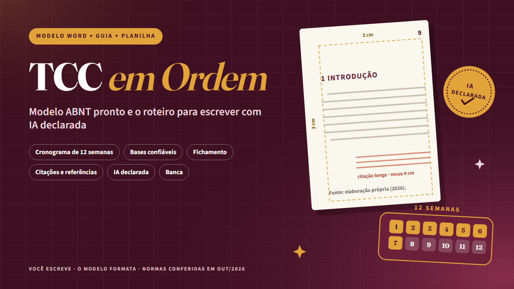

TCC em Ordem
Modelo ABNT pronto e o roteiro para escrever com IA declarada
Modelo Word no padrão ABNT vigente, guia de 12 semanas do tema à banca e planilha de cronograma e fichamento. Com IA usada de forma ética e declarada. Você escreve; o modelo formata.
Quero o meu por R$ 37Modelo Word ABNT + guia de 36 páginas + planilha · acesso na hora · garantia de 7 dias

Onde o TCC trava
- O TCC trava quando tudo acontece ao mesmo tempo: o tema ainda aberto, as leituras sem anotação, a formatação deixada para a última noite e as referências virando caça ao tesouro na véspera da entrega.
O TCC em Ordem organiza o caminho em três peças que trabalham juntas. Você escreve dentro de um modelo Word já formatado, segue um roteiro de 12 semanas do tema ao depósito e acompanha tudo numa planilha. A autoria é sua, do tema à última vírgula.
O que tem dentro
- Modelo Word no padrão ABNT, vazio e formatado: capa, folha de rosto, resumo, sumário automático, títulos numerados, paginação certa e 32 instruções em comentários. Abre no Word, no LibreOffice e no Google Documentos.
- Normas com edição conferida: NBR 14724:2024, 6023:2025, 10520:2023, 6024, 6027 e 6028, conferidas em 20/10/2026.
- Roteiro de 12 semanas: do tema ao depósito, com o funil do tema à pergunta.
- Pesquisa e fichamento: SciELO, Google Acadêmico, Periódicos da CAPES e BDTD, e quatro tipos de anotação para não plagiar sem querer.
- IA com ética e declarada: o que costuma ser aceito e o que não é, como conferir se a referência existe, modelo de declaração de uso de IA e 15 prompts que perguntam, sem escrever por você.
- Citações e referências: exemplos reais conferidos, revisão em três passadas, checklist final e apresentação para a banca.
- Planilha: cronograma que calcula as datas e mostra o que está atrasado, fichamento com filtros, registro de uso de IA e checklist de 20 itens.
É para você se…
- Graduandos e alunos de especialização que vão escrever o TCC e querem método, prazo e formatação certa desde o primeiro dia.
- Quem quer usar ferramentas de IA sem correr risco de fraude acadêmica: com regra clara, registro e declaração.
Não é para você se…
- Quem procura trabalho pronto ou alguém para escrever. Este kit não faz isso, e essa prática pode ser tratada como fraude.
- Quem quer "passar no detector" ou "reescrever para não dar plágio": o kit ensina o contrário.
- Quem já tem modelo oficial obrigatório do curso: use o modelo do curso. O guia e a planilha continuam servindo.
O que este produto NÃO é: Não escreve o trabalho, não revisa o seu texto e não promete nota nem aprovação: quem avalia é a banca. As normas da ABNT citadas tiveram a edição vigente conferida em 20/10/2026 em fontes públicas, e o texto das normas, que é vendido pela ABNT, não é reproduzido. O manual da sua instituição prevalece sobre o guia e o modelo. Sem vínculo com a ABNT, com as instituições citadas nem com as empresas das ferramentas e bases mencionadas.
Tudo por um pagamento único
Modelo Word ABNT + guia de 36 páginas + planilha · sem mensalidade
Pix ou cartão · acesso imediato pela área de membros da Kiwify (o link chega no seu e-mail)
100% de volta
Leia por 7 dias. Se não servir, o dinheiro volta inteiro.
Peça o reembolso pela Kiwify ou pelo e-mail lucaszone36@gmail.com, sem precisar explicar. Esse prazo é um direito seu pelo Código de Defesa do Consumidor.
Quero testar sem riscoPerguntas frequentes
Como recebo?
Acesso imediato pela área de membros da Kiwify. O link de acesso chega no e-mail informado na compra.
Consigo ler no celular?
Sim. O PDF abre no celular, no tablet e no computador.
Vocês escrevem o meu TCC?
Não. O kit não escreve nem revisa o seu texto. Comprar ou encomendar trabalho pronto pode ser tratado como fraude acadêmica. Aqui a autoria é sua, do tema à última vírgula.
E se o meu curso tiver modelo próprio?
O manual da sua instituição prevalece. Use o modelo do curso; o guia e a planilha continuam servindo.
Posso usar IA no TCC?
Depende da regra da sua instituição. O guia mostra o que costuma ser aceito, como registrar o uso e como declarar, com um modelo de declaração pronto.
E se eu me arrepender?
Você tem 7 dias para pedir 100% do valor de volta, sem justificar, pela Kiwify ou pelo e-mail lucaszone36@gmail.com.